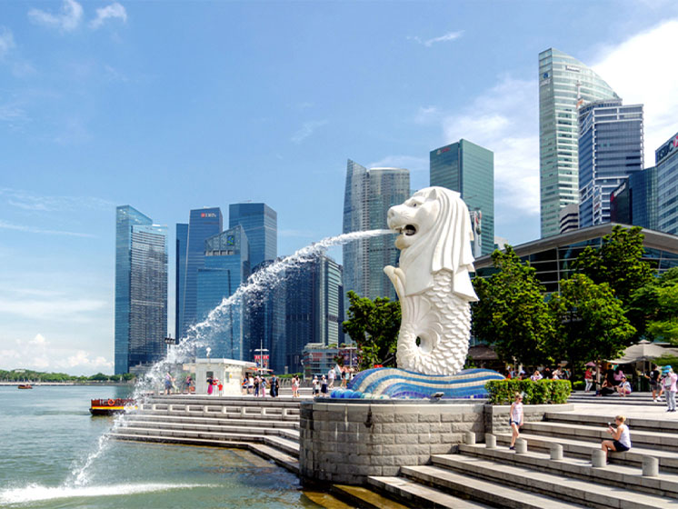

Going to Singapore
During the summer break, myy family and I went to Singapore for 3 days and 2 nights! When I arrived at Singapore, we went to go see many famous attractions at Singapore like the Merlion, the waterfall at Changi Airport, Marina Bay Sands, and so mmany more. Singapore was very different to Cambodia despite being a small country. The country's living expense is very different to Cambodia and it is really expensive. Overall, I think that Singapore is a great place to travel and I would defineitely come back again.